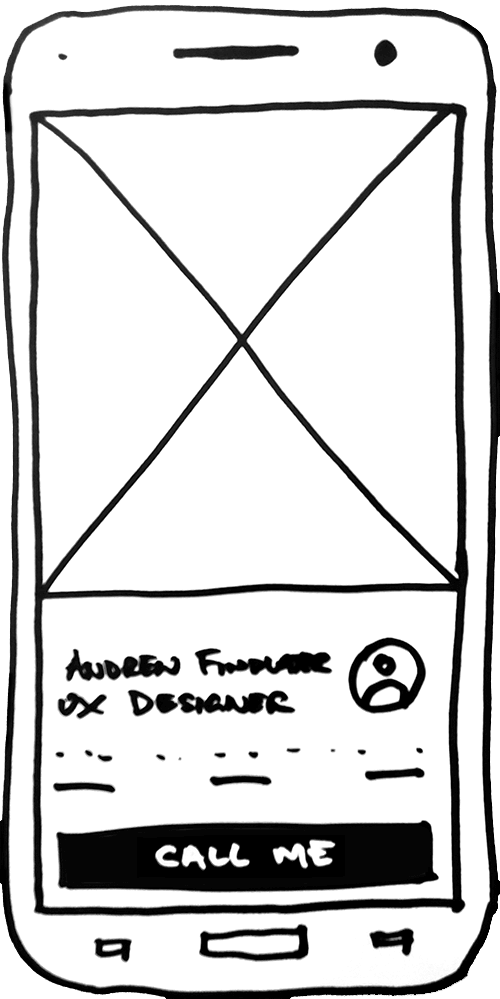

af
Projects
Case study: barfoot.co.nz
Case study: Saleskit 2.0
Case study: Auctions
More projects

GET IN TOUCH
Andrew Findlater
UX designer living and working in Tauranga, New Zealand.
About Andrew